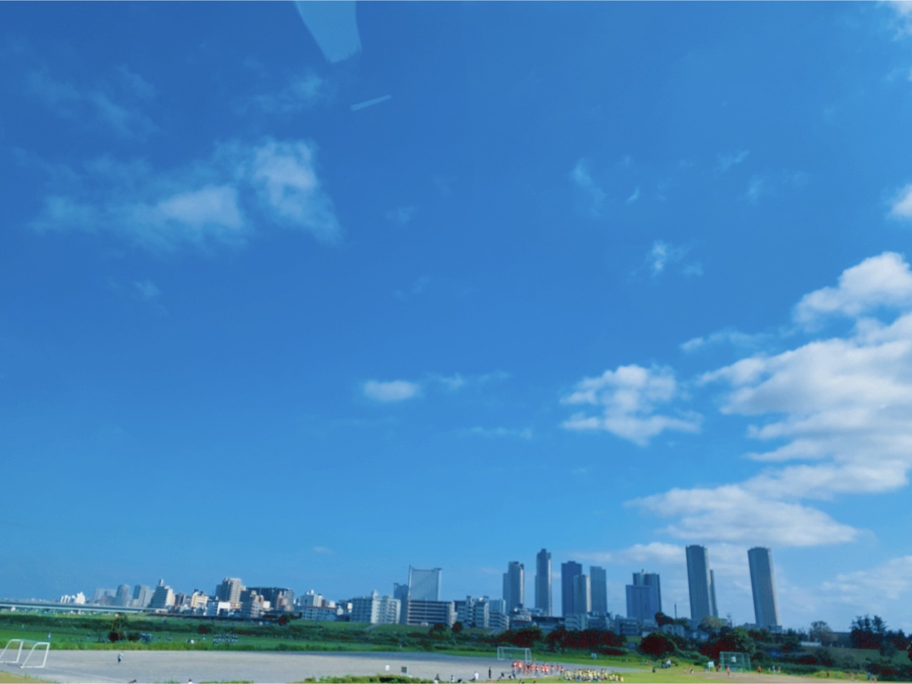

2020/0719Sunココロは見えなくないよ
こんにちは


昨日は音楽の日 生放送でした
乃木坂46の出番とは別に
ZARDさんの負けないで
を歌わせていただきました
ZARDさんの曲は昔から
よく聴かせていただいていて
改めて素敵な歌でそんな歌を
歌わせていただけて嬉しかったです
他のアーティストさんの歌も
凄く心に染みて出番以外もずっと
テレビに釘付けでした
みなさんに少しでも届いていたらいいな...
" どんなに離れてても心はそばにいるわ "

雨続きの日々でしたが今日はからっと
晴れましたね

ハーフツインまた、しますね♩
では
2020/07/19 17:48
コメント(367)
未央奈ちゃん。ブロブ更新ありがとう。あ～綺麗な写真 きれいな 青空 思わず ビューティフル と叫びたくなります。未央奈と一緒で美しい風景好きです。 パネル展 大阪会場か名古屋会場 で観ます。
更新待ってました〜！
昨日の音楽の日ちゃんと見たよ！
未央奈ちゃんのハーフツイン優勝してた✨
青空の写真めっちゃ綺麗〜
次の更新も待ってます
昨日の音楽の日ちゃんと見たよ！
未央奈ちゃんのハーフツイン優勝してた✨
青空の写真めっちゃ綺麗〜
次の更新も待ってます
日々可愛くなるなぁ！
みおなさ～ん、音楽の日、お疲れ様！！
うち、最初から全～部観てたぜよ。
みおなさん、歌うの、めっちゃ上手いやん！
こんなにも、負けないで、しっとり歌うの、すごいなあ～って、感激してたよ。
裸足でSummer、タオルを持って、かなり盛り上がり、めっちゃ楽しい、嬉しい、幸せ～！
やっぱ、夏はこの曲。
もちろん、ガールズルールも夏の名曲だね！
世界中の隣人よ、笑顔と涙でいっぱい！
何回聴いても、染みるね。
あすかちゃん、まいやんがみんなの列の間を通るシーン、１番感動！！
もちろん、みおなさんのとこも良かったよ、また思い出して、涙が出ちゃう～。
みおなさんたち、みんな、ありがとう！！！
早く平和な世の中になるといいね。
お互いにお仕事、歌とダンスの練習、健康な生活、頑張ろう。
はなれてたって、ぼくらはいっしょ！！
綺麗な青空を見てると、何度目の青空か？をいつも歌ってる！
にっこり。
明日も晴れるといいな～。
おっ、ハーフツイン、ええやん、似合う～。
うち、みおなさんの笑顔、髪型、心、全部、めっちゃ大好き！
次のブログ、楽しみ、楽しみにしとる！
うち、最初から全～部観てたぜよ。
みおなさん、歌うの、めっちゃ上手いやん！
こんなにも、負けないで、しっとり歌うの、すごいなあ～って、感激してたよ。
裸足でSummer、タオルを持って、かなり盛り上がり、めっちゃ楽しい、嬉しい、幸せ～！
やっぱ、夏はこの曲。
もちろん、ガールズルールも夏の名曲だね！
世界中の隣人よ、笑顔と涙でいっぱい！
何回聴いても、染みるね。
あすかちゃん、まいやんがみんなの列の間を通るシーン、１番感動！！
もちろん、みおなさんのとこも良かったよ、また思い出して、涙が出ちゃう～。
みおなさんたち、みんな、ありがとう！！！
早く平和な世の中になるといいね。
お互いにお仕事、歌とダンスの練習、健康な生活、頑張ろう。
はなれてたって、ぼくらはいっしょ！！
綺麗な青空を見てると、何度目の青空か？をいつも歌ってる！
にっこり。
明日も晴れるといいな～。
おっ、ハーフツイン、ええやん、似合う～。
うち、みおなさんの笑顔、髪型、心、全部、めっちゃ大好き！
次のブログ、楽しみ、楽しみにしとる！
こんばんは。
ちなみにZARDさんの曲は他に何が好きですか？
僕は坂井泉水さんの世界観が好きで良く聞いてるのですが、個人的には来年の夏もやあなたのせいじゃないやこの愛に泳ぎ疲れても等が好きです。
音楽の日録画トラブルで見れなかった残念すぎる。
ちなみにZARDさんの曲は他に何が好きですか？
僕は坂井泉水さんの世界観が好きで良く聞いてるのですが、個人的には来年の夏もやあなたのせいじゃないやこの愛に泳ぎ疲れても等が好きです。
音楽の日録画トラブルで見れなかった残念すぎる。
ブログ更新ありがとう
未央奈ちゃん可愛い
ハーフツイン似合ってたよ
未央奈ちゃん可愛い
ハーフツイン似合ってたよ
堀ちゃん!!更新ありがとうございます!!
1つ堀ちゃんに質問したいことがあって、、、
自分女子中学生で、
部活はソフト部に入っていて
よくほかの女子からダサいとか言われるんですけど、
ソフト部ってカッコ悪いですかね笑??こんな質問しちゃってごめんなさい!!応援してます!!
1つ堀ちゃんに質問したいことがあって、、、
自分女子中学生で、
部活はソフト部に入っていて
よくほかの女子からダサいとか言われるんですけど、
ソフト部ってカッコ悪いですかね笑??こんな質問しちゃってごめんなさい!!応援してます!!
こんばんは。
音楽の日お疲れ様でした。
「負けないで」歌えて良かったね。
「世界中の隣人よ」振り付きだとあんな感じなんだね。
最高でした。
音楽の日お疲れ様でした。
「負けないで」歌えて良かったね。
「世界中の隣人よ」振り付きだとあんな感じなんだね。
最高でした。
ブログ更新ありがと〜
昨日の音楽の日、最高でした‼︎
お疲れ様です‼︎
久しぶりにテレビで乃木坂のみんなが踊ってるすがたをみて、感動しました‼︎
ハーフツインもすっごく似合ってたよ♡
昨日の音楽の日、最高でした‼︎
お疲れ様です‼︎
久しぶりにテレビで乃木坂のみんなが踊ってるすがたをみて、感動しました‼︎
ハーフツインもすっごく似合ってたよ♡
負けないで、素敵でした
堀ちゃんのアップにキュンキュンしました
堀ちゃんのアップにキュンキュンしました
未央奈〜！！
ブログ更新ありがとう
音楽の日見てたよ！
負けないでも乃木坂の出番両方良かった
ハーフツイン可愛かったよ
未央奈以外もみんな可愛かった！
次の更新も待ってるね〜！！
ブログ更新ありがとう
音楽の日見てたよ！
負けないでも乃木坂の出番両方良かった
ハーフツイン可愛かったよ
未央奈以外もみんな可愛かった！
次の更新も待ってるね〜！！
堀さん今日もお綺麗です！
未央奈、今日も昨日も可愛いかったー
癒し、幸せをありがとう！！＼(^^)／
人生時々は、適当にやって心の余裕を持たせることの大切さが最近のニュースで改めて感じる
未央奈、今日も昨日も可愛いかったー
癒し、幸せをありがとう！！＼(^^)／
人生時々は、適当にやって心の余裕を持たせることの大切さが最近のニュースで改めて感じる
未央奈ちゃん、今日も一日お疲れさまです。
愛するとは言葉はなくていい
そばにいることだ、だよね。
それだけで心がぽっと温かくなります。
その温かさが表情やちょっとした仕草に
出てくると思っています。
ココロは見えなくないよ、
僕もそう思います。
これからも頑張ってください！！！
応援しています！！！
愛するとは言葉はなくていい
そばにいることだ、だよね。
それだけで心がぽっと温かくなります。
その温かさが表情やちょっとした仕草に
出てくると思っています。
ココロは見えなくないよ、
僕もそう思います。
これからも頑張ってください！！！
応援しています！！！
未央奈ちゃんいるの気づきましたよ(^o^)
ハーフツインにしてるのも。
かわいい♥️
ZARDさんは、初期のコナンでよく使われてたな。
やる気を出したい。。
けど眠けがする。最近……
で、未央奈ちゃん。
なんで、ハーフツインにしようと？
もしかして、、、
『The secret makes a woman a woman.』
いたずらっぽいウインクはなぜだ？
☆(−_^)
ハーフツインにしてるのも。
かわいい♥️
ZARDさんは、初期のコナンでよく使われてたな。
やる気を出したい。。
けど眠けがする。最近……
で、未央奈ちゃん。
なんで、ハーフツインにしようと？
もしかして、、、
『The secret makes a woman a woman.』
いたずらっぽいウインクはなぜだ？
☆(−_^)
未央奈さん可愛い！！
うぉぉぉーー未央奈さん可愛いすぎますー！！
大大大好き！！
体調にはお気を付けください！
大好き！大好き！
うぉぉぉーー未央奈さん可愛いすぎますー！！
大大大好き！！
体調にはお気を付けください！
大好き！大好き！
かわいいよ未央ちゃん
大好き！
大好き！
好き
未央奈さん音楽の日めちゃ良かったよー
ZARDさんの曲も良かったし、今回の裸足でSummerは久しぶりにまいやんも見れて乃木坂から元気もらえました
きいちゃんと梅ちゃんと未央奈さんのカットのとこ良かったー 世界中の隣人よも感動だったし最高でした！
世界中の隣人よも感動だったし最高でした！
未央奈さんの髪型も注目してたよ
河原写真綺麗だなーと思って見てたら家のめちゃ近くでしたw
いつもそこランニングコースで走ってます
本当です 見慣れた風景なんですぐ気付いてしまいました凄い偶然ですね
見慣れた風景なんですぐ気付いてしまいました凄い偶然ですね
ZARDさんの曲も良かったし、今回の裸足でSummerは久しぶりにまいやんも見れて乃木坂から元気もらえました
きいちゃんと梅ちゃんと未央奈さんのカットのとこ良かったー
未央奈さんの髪型も注目してたよ
河原写真綺麗だなーと思って見てたら家のめちゃ近くでしたw
いつもそこランニングコースで走ってます
本当です
未央奈さんブログ更新してくれてありがとうございます。未央奈さん昨日の音楽の日見てました。未央奈さんとさくらちゃんと遥香さんは見つけました後は山下美月さんだね。未央奈さん髪型少し変えたの気付いたよ。とっても似合う 可愛い❤️かった。未央奈さんのモバメもらっていると友達みたいに感じる。ZARDは負けないでもう少し最後まで走り続けてどんなに離れてても心はそばに居るわ追いかけて遥かな夢をって歌詞が毎年24時間テレビを連想します。未央奈さん何時もありがとう。東京都はコロナウイルスの患者が増えているので未央奈さんもコロナウイルスに負けないで頑張って✊ ✊。
大好きな未央奈！俺強くなるね！
ブログ更新ありがとう！
昨日の音楽の日、観たよー！
すごい良かった！
乃木坂カバーの負けないで、大好きになりました！
本当に昨日の音楽の日はいつもと違った感じで心にくるものがあったよ
シブツタのパネル展、#堀未央奈展 にも行ったよ！
約一年ぶりにホットギミック ガールミーツボーイも観に行って、久しぶりに劇場で観るホットギミックロスに陥ってるよ
本当に大好きな一作です！
昨日の音楽の日、観たよー！
すごい良かった！
乃木坂カバーの負けないで、大好きになりました！
本当に昨日の音楽の日はいつもと違った感じで心にくるものがあったよ
シブツタのパネル展、#堀未央奈展 にも行ったよ！
約一年ぶりにホットギミック ガールミーツボーイも観に行って、久しぶりに劇場で観るホットギミックロスに陥ってるよ
本当に大好きな一作です！
昨日みたよー！！ハーフツインめちゃめちゃ可愛かった
いつも元気をありがとう
いつも元気をありがとう
すちやよ♥️♥️
名古屋名駅の近鉄パッセ星野書店さんのパネル展に行ってきました。ＰＲビデオを見て、パネルのメッセージを読んで、ほっこりしました。「名古屋メシ大好き」のひとことに、名古屋市民は歓喜です。展示されているパネルも、どれも本編に入っていても良いレベルの写真ばかりで素敵でした。
いろいろ考えることがあるようですね。ここのところの未央奈ちゃんの755には、様々な想いや問いかけなどが綴られていて、我々ファンも、改めて考え直すきっかけをいただいています。
とにかく、同じ生きるのなら、楽しく生きなきゃもったいないですよね。素敵な映画や音楽に出逢えるだけでも幸せなことです。
出来ることなら、諦めないで生きていきたいですね。
「音楽の日」での「負けないで」。乃木坂らしいソフトで温かい歌声に癒される想いで聞いていました。未央奈ちゃんの優しい笑顔で歌う姿がひさしぶりにテレビで見れて嬉しかったです。
梅雨明けはまだですが、今日はセミが夏を告げるかのように、元気に鳴き始めていました。
こんなことも、小さな幸せにひたらせてくれますね。
では、Ｍステ楽しみにしています。
いろいろ考えることがあるようですね。ここのところの未央奈ちゃんの755には、様々な想いや問いかけなどが綴られていて、我々ファンも、改めて考え直すきっかけをいただいています。
とにかく、同じ生きるのなら、楽しく生きなきゃもったいないですよね。素敵な映画や音楽に出逢えるだけでも幸せなことです。
出来ることなら、諦めないで生きていきたいですね。
「音楽の日」での「負けないで」。乃木坂らしいソフトで温かい歌声に癒される想いで聞いていました。未央奈ちゃんの優しい笑顔で歌う姿がひさしぶりにテレビで見れて嬉しかったです。
梅雨明けはまだですが、今日はセミが夏を告げるかのように、元気に鳴き始めていました。
こんなことも、小さな幸せにひたらせてくれますね。
では、Ｍステ楽しみにしています。
音楽の日観ましたよ~♪
すごく良かったです
あと、髪型すごく似合って可愛かったです(*^^*)
すごく良かったです
あと、髪型すごく似合って可愛かったです(*^^*)
ブログ更新ありがとう！最近暑くなってきたし、お互い体調に気を付けて頑張ろう！！次も絶対見るからね！
ほりっぴ～、ナンチです♪
音楽の日
ハーフツインがめっちゃ似合ってたよ
隣人も聞けてうれしかったな
昨日エムオンTVでバスラ3rdの放送があったんだ
ほりっぴ～のバレッタ
二期生の昇格
当時仕事で現地に行けなくて悔しかったのを思い出したよ
やっぱりライブはいいよね
早く日常が戻りますように
音楽の日
ハーフツインがめっちゃ似合ってたよ
隣人も聞けてうれしかったな
昨日エムオンTVでバスラ3rdの放送があったんだ
ほりっぴ～のバレッタ
二期生の昇格
当時仕事で現地に行けなくて悔しかったのを思い出したよ
やっぱりライブはいいよね
早く日常が戻りますように
負けないで最高でした！毎日写真集見てます！名前サイリウム買います！大好きです！
可愛い❤️
胸元がセクシー╰(*´︶`*)╯♡
胸元がセクシー╰(*´︶`*)╯♡
くわぁー！早速ハーフツインだ！！ありがとう！(゜▽゜*)
ヤバいなヤバいな～～可愛いぞこの♪
ウインクの調子も良いねっ。σ(*´∀｀*)
ショートも良いなぁってどんどん思ってきてる！
(どちらかといえばロング派なのは変わらないと思うけど)
でもどっちも似合うって強いなー。
負けないでほんと良かったよ！俺もZARDさんの曲大好きで今でも聴いてる！
揺れる想い
きっと忘れない
マイフレンド
心開いてetc.
他にもたくさんあるなー。坂井泉水さんももっと生きていてほしかったよね。(´・ω・`)
晴れるとやっぱ嬉しいよねっ！気持ちもいい。
また未央奈たちが天気の子パワーのおかげかとちょっと思ったりしたw
ハーフツインぜひぜひまた！今のとこ俺の好きな未央奈の髪型ベスト3にはいっておりますよ☆
Tシャツ姿もいいなー。俺も最近家ではおんなじような格好してるw
夏はTシャツだよね！しかも白って感じする。余談でしたー。
ブログありがとうね！今日も元気出たよ。
でわでわまたねー。
ヤバいなヤバいな～～可愛いぞこの♪
ウインクの調子も良いねっ。σ(*´∀｀*)
ショートも良いなぁってどんどん思ってきてる！
(どちらかといえばロング派なのは変わらないと思うけど)
でもどっちも似合うって強いなー。
負けないでほんと良かったよ！俺もZARDさんの曲大好きで今でも聴いてる！
揺れる想い
きっと忘れない
マイフレンド
心開いてetc.
他にもたくさんあるなー。坂井泉水さんももっと生きていてほしかったよね。(´・ω・`)
晴れるとやっぱ嬉しいよねっ！気持ちもいい。
また未央奈たちが天気の子パワーのおかげかとちょっと思ったりしたw
ハーフツインぜひぜひまた！今のとこ俺の好きな未央奈の髪型ベスト3にはいっておりますよ☆
Tシャツ姿もいいなー。俺も最近家ではおんなじような格好してるw
夏はTシャツだよね！しかも白って感じする。余談でしたー。
ブログありがとうね！今日も元気出たよ。
でわでわまたねー。
ほりみおなさんこんばんは。お元気ですか、きのうの音楽の日みました、さいこうにかわいかったです。いつか握手会楽しみにしています:d-point たせっち
・へい未央奈(•ө•)
・『黒い司法０％からの奇跡』を観たよ(^^)感動した。冤罪死刑囚の無実を信じて、差別や不正に立ち向かい、理想から信念に変えて戦った弁護士の実話のお話しかな。
５００円を払って、レンタルをした価値はあったよ。笑
内容はグリーンブックに近い感じかな。未央奈観てね•̀.̫•́✧
・おやすみおなー(*´﹃｀*)
・『黒い司法０％からの奇跡』を観たよ(^^)感動した。冤罪死刑囚の無実を信じて、差別や不正に立ち向かい、理想から信念に変えて戦った弁護士の実話のお話しかな。
５００円を払って、レンタルをした価値はあったよ。笑
内容はグリーンブックに近い感じかな。未央奈観てね•̀.̫•́✧
・おやすみおなー(*´﹃｀*)
昨日の音楽の日見たよ！
パフォーマンスを見るとテンション上がりますね。
テレビ出演する時の髪型にも最近は注目するようになって、堀ちゃんの髪型もしっかり確認しました！
それも楽しみの一つです。
大好きな乃木坂の曲で元気貰ったので、明日からまた一週間頑張れます。
ありがとう！
★とし★
パフォーマンスを見るとテンション上がりますね。
テレビ出演する時の髪型にも最近は注目するようになって、堀ちゃんの髪型もしっかり確認しました！
それも楽しみの一つです。
大好きな乃木坂の曲で元気貰ったので、明日からまた一週間頑張れます。
ありがとう！
★とし★
堀さん。いつも更新ありがとう。
番組は見逃してしまいました。残念。ところで
「心はみえるのか」。それが意図的であったり、或いは無意識的にというか何かを通じて感じる。
例えば音楽、映像、文章、絵画・・・など
「感じる」事つまり「心」のコンディションがすぐれない状態とか、柔軟さに欠ける時「感じる感覚が低下する＝感じられない＝こころがみえない」。或いはその逆というか・・・
がちがちの文章すみません。堀さんに伝わるかな。お話変わって今回のブログの堀さん「めっちゃかわええぇ～」ですよ！
余談ですが写真の背景の楕円はダイ〇ンの扇風機？羽が「見えないもの」でつい気になって。ではまだ梅雨明けでないので体調崩されないよう祈ってます！
番組は見逃してしまいました。残念。ところで
「心はみえるのか」。それが意図的であったり、或いは無意識的にというか何かを通じて感じる。
例えば音楽、映像、文章、絵画・・・など
「感じる」事つまり「心」のコンディションがすぐれない状態とか、柔軟さに欠ける時「感じる感覚が低下する＝感じられない＝こころがみえない」。或いはその逆というか・・・
がちがちの文章すみません。堀さんに伝わるかな。お話変わって今回のブログの堀さん「めっちゃかわええぇ～」ですよ！
余談ですが写真の背景の楕円はダイ〇ンの扇風機？羽が「見えないもの」でつい気になって。ではまだ梅雨明けでないので体調崩されないよう祈ってます！
音楽の日、みました！！
もどかしさと怖さがある日常と、
雨続きの毎日で気分も滅入って
いたけど、未央奈の画像と青空で
久しぶりに笑顔になれたよ。
ありがとう。
"あなたがそばにいてくれたら
Ah～夢からさめた
これからもあなたを
愛してる"
街角に夏を飾る
向日葵☆
雨続きの毎日で気分も滅入って
いたけど、未央奈の画像と青空で
久しぶりに笑顔になれたよ。
ありがとう。
"あなたがそばにいてくれたら
Ah～夢からさめた
これからもあなたを
愛してる"
街角に夏を飾る
向日葵☆
こんばんは。
可愛い写真をありがとうございます。
お身体にはお気をつけてくださいね。
頑張って行きましょう。
可愛い写真をありがとうございます。
お身体にはお気をつけてくださいね。
頑張って行きましょう。
お疲れ様でした！！しっかり見ました！！
とてつもなく可愛かった♡
昨日はいろんな方がいろんな思いを抱えながら歌ってましたね。
久保ちゃんが素晴らしい仕事して、感動しました。
とてつもなく可愛かった♡
昨日はいろんな方がいろんな思いを抱えながら歌ってましたね。
久保ちゃんが素晴らしい仕事して、感動しました。
ハーフツインばり可愛い！！！
私FJKだけど似合わないもん笑
ショートで似合うとかほんとすごいしほんっとに可愛すぎる！また絶対してね！
私FJKだけど似合わないもん笑
ショートで似合うとかほんとすごいしほんっとに可愛すぎる！また絶対してね！
ほんと今日はからっと晴れたね～？
唐揚げもいつもよりからっと揚がったよ♪
ちなみに､これでも調子は良い方です…。


唐揚げもいつもよりからっと揚がったよ♪
ちなみに､これでも調子は良い方です…。
未央奈ブログ更新ありがとう！
昨日はお疲れ様！ハーフツインよかったよ！
めっかわでした(//∇//)
暇があったので久々に新海先生の映画を見たんだけど
やっぱりストーリーもいいけど曲が良すぎて(>_<)
今日は久々に夏を感じました(^^)
この夏はみんなが沢山笑えるような夏にしたいなぁ〜！
早くライブや握手会で会えるの楽しみにしてるね！
次のブログも楽しみに待ってるね！
昨日はお疲れ様！ハーフツインよかったよ！
めっかわでした(//∇//)
暇があったので久々に新海先生の映画を見たんだけど
やっぱりストーリーもいいけど曲が良すぎて(>_<)
今日は久々に夏を感じました(^^)
この夏はみんなが沢山笑えるような夏にしたいなぁ〜！
早くライブや握手会で会えるの楽しみにしてるね！
次のブログも楽しみに待ってるね！
未央奈ちゃんこんばんは☺️
音楽って改めて凄いね♪
熱い！
ZARDさんの曲聴くと元気が出る ️
ハーフツイン可愛い(〃^ー^〃)
明日もHAPPYを
お休みなさい(^-^ゞ
音楽って改めて凄いね♪
熱い！
ZARDさんの曲聴くと元気が出る ️
ハーフツイン可愛い(〃^ー^〃)
明日もHAPPYを
お休みなさい(^-^ゞ
未央奈ちゃん、音楽の日お疲れ様〜。
裸足でSummerと世界中の隣人よ。負けないでのカバー。どれも良かった✨
ハーフツインめっちゃ可愛かったよ
生放送で歌って踊ってる未央奈ちゃんを見られて元気もらえたよ！
裸足でSummerと世界中の隣人よ。負けないでのカバー。どれも良かった✨
ハーフツインめっちゃ可愛かったよ
生放送で歌って踊ってる未央奈ちゃんを見られて元気もらえたよ！
音楽の日観ました！ハーフツイン似合いすぎです！
皆思い通りの日常が送れない日々の中、乃木坂のSNSや音楽のお陰で自分は元気や受験勉強のやる気を貰えてます！いつもありがとうございます！未央奈さんもお体に気を付けてください！応援してます！
皆思い通りの日常が送れない日々の中、乃木坂のSNSや音楽のお陰で自分は元気や受験勉強のやる気を貰えてます！いつもありがとうございます！未央奈さんもお体に気を付けてください！応援してます！
未央奈さんに憧れて乃木坂に入りたいと思うようになりました
だいすきです
だいすきです
未央奈ちゃんこんばんは
昨日のパフォーマンスは見えました、生放送とか結構久しぶりので心から感動した、よかったです
昨日もう気付いたの、未央奈ちゃんのハーフツインはどでも可愛いです、可愛すぎて投稿したな写真がホーム画面をセットしてでもいいですか
昨日のパフォーマンスは見えました、生放送とか結構久しぶりので心から感動した、よかったです
昨日もう気付いたの、未央奈ちゃんのハーフツインはどでも可愛いです、可愛すぎて投稿したな写真がホーム画面をセットしてでもいいですか
未央奈ちゃん！ハーフツイン可愛すぎた
ポニテ推しだったけどハーフツインもまた見たいな♪
ポニテ推しだったけどハーフツインもまた見たいな♪
未央奈～ こんにちは
ブログ更新ありがとうございます。
昨日の「音楽の日」、おつかれさまでした。久しぶりの生放送の音楽番組、なんかすごく待ち遠しかったです。久しぶりの「裸足でSummer」、そして久しぶりの「サンダル脱ぎ捨て隊」楽しませていただきました。慣れないみなみんが慌てて走ってましたね。テレビ初公開の「世界中の隣人よ」、やっぱり良かったです。円盤化されるのは、次のアルバム？ おじさんには待ち遠しい限りです。
それより前のZARDの「負けないで」、この大好きな曲を大好きな乃木坂４６が歌ってくれるなんて、光栄です。励まされました。おそらく、コロナ禍や今回の豪雨で被害を受けられた方にも「元気」をお届けできたことと思います。
もうひとつ、今日の７５５の未央奈の文に感動しました。今から５年くらい前かな？ 「いじめ」に対しても「絶対許しません」と強い表情で熱く発信していたことも思い出しました。
そう、だから以来私は未央奈推しになっているのです。これからもそんな未央奈、応援していきたいと思います。
ハーフツインも可愛かったですよ。
ブログ更新ありがとうございます。
昨日の「音楽の日」、おつかれさまでした。久しぶりの生放送の音楽番組、なんかすごく待ち遠しかったです。久しぶりの「裸足でSummer」、そして久しぶりの「サンダル脱ぎ捨て隊」楽しませていただきました。慣れないみなみんが慌てて走ってましたね。テレビ初公開の「世界中の隣人よ」、やっぱり良かったです。円盤化されるのは、次のアルバム？ おじさんには待ち遠しい限りです。
それより前のZARDの「負けないで」、この大好きな曲を大好きな乃木坂４６が歌ってくれるなんて、光栄です。励まされました。おそらく、コロナ禍や今回の豪雨で被害を受けられた方にも「元気」をお届けできたことと思います。
もうひとつ、今日の７５５の未央奈の文に感動しました。今から５年くらい前かな？ 「いじめ」に対しても「絶対許しません」と強い表情で熱く発信していたことも思い出しました。
そう、だから以来私は未央奈推しになっているのです。これからもそんな未央奈、応援していきたいと思います。
ハーフツインも可愛かったですよ。
早くライブ出来るようになるといいですね
ライブでアナスターシャ聴きたい！
ライブでアナスターシャ聴きたい！


こんばんは
エンタメのニュースで幾つか
驚くニュースがありました
夕べの『音楽の日』
観たよぉー
堀ちゃん見つけました
では